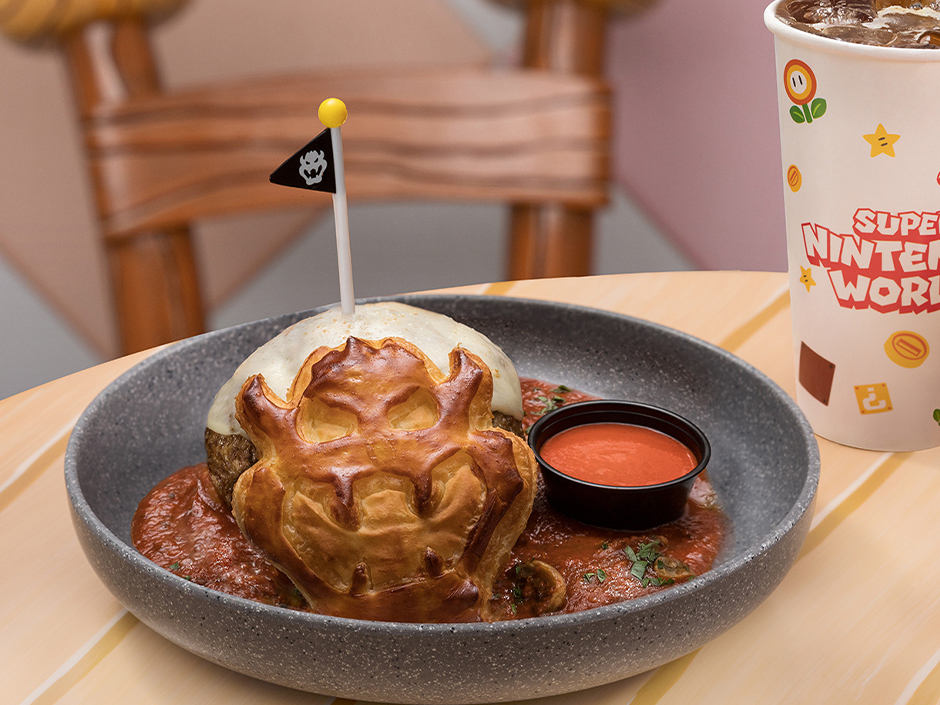

Welcome to Our Restaurant
At La Chelita, every meal has a story. Inspired by family recipes, handmade tortillas, and the flavors of Jalisco, we bring generations of tradition together with Jessica's own Mexican-American Texas influence. Whether you're stopping by for an old favorite or trying something new, there's always a place for you at our table.